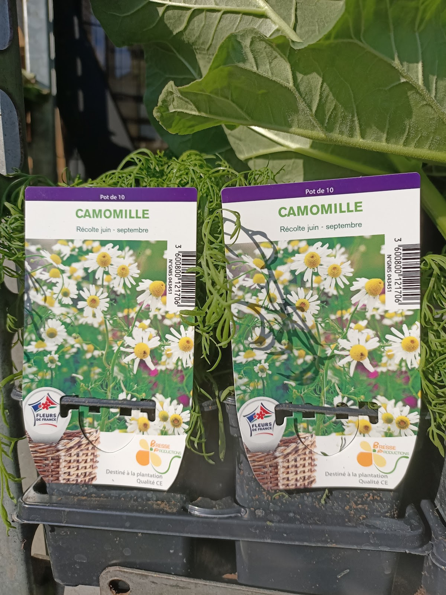
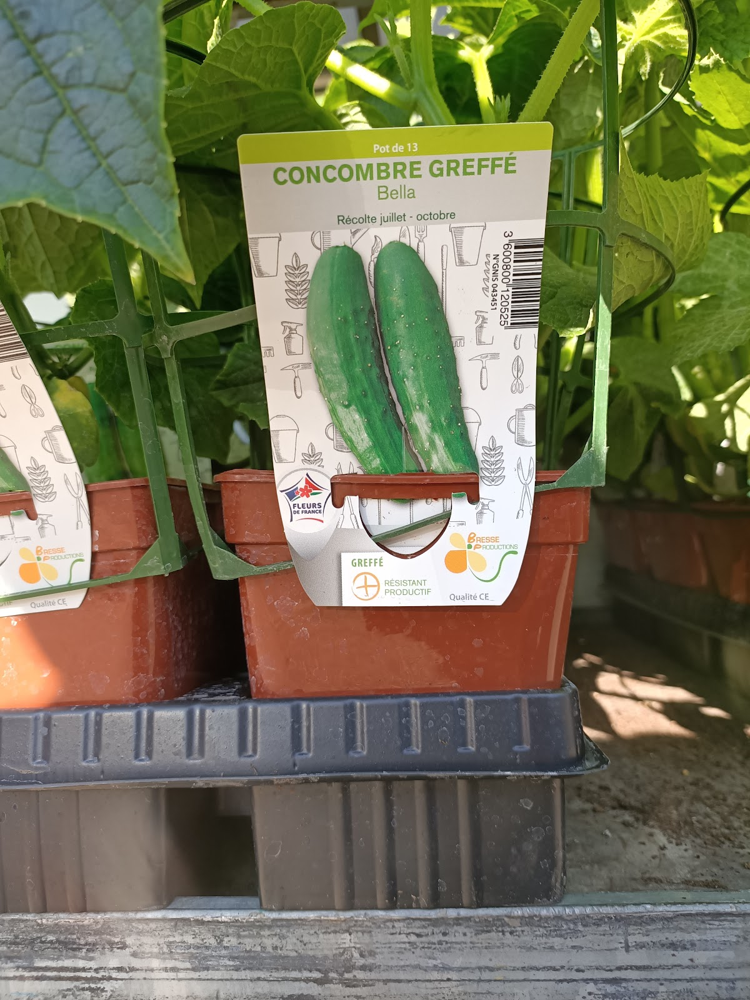

01
Fleurs & compositions
Pour offrir, marquer une attention ou fleurir votre intérieur, découvrez les fleurs et compositions proposées en boutique.
Appeler pour en parlerFleuriste · Saint-Étienne
Une boutique à découvrir Rue des Adieux pour choisir une plante, composer une attention ou simplement prendre le temps d'être bien conseillé.
46 avis Google
Une réputation construite sur l'accueil, la qualité et le conseil.
Au cœur de la boutique
Les avis parlent d'une adresse où l'on vient autant pour la qualité des fleurs et des plantes que pour l'écoute. Plusieurs clients soulignent les variétés rares ou originales, la patience dans les conseils et la possibilité de demander des compositions.
Lire les avis clientsPour offrir, marquer une attention ou fleurir votre intérieur, découvrez les fleurs et compositions proposées en boutique.
Appeler pour en parlerLes avis mettent notamment en avant le choix de plantes, avec des variétés décrites comme rares et originales par les clients.
Voir l'univers végétalUn besoin particulier ? La boutique est citée pour ses compositions à la demande. Le plus simple est d'appeler pour présenter votre idée.
Échanger avec la boutique

Une adresse de proximité
Ce qui revient le plus souvent dans les témoignages : un accueil sympathique, une vraie disponibilité et des conseils donnés avec patience. C'est cette relation simple et directe qui donne envie de revenir.
Très belles plantes, beaucoup de variétés rares et originales, avec de vrais conseils de passionné.
— Isarn de la Dent-Blanche, avis GoogleEn images
Quelques photos issues de la fiche Google Business Profile de l'établissement.


Ils en parlent mieux que nous
Horaires
Avant de venir
Pour une demande précise, une composition ou la disponibilité d'un végétal, un appel reste le moyen le plus direct d'obtenir une réponse.
La boutique se situe au 14 Rue des Adieux, 42000 Saint-Étienne. Le bouton « Itinéraire » ouvre directement Google Maps vers cette adresse.
Du lundi au samedi : 08:30–12:00 et 14:00–18:00. Le dimanche : 08:30–13:00. Ces horaires sont ceux fournis dans la fiche Google Business Profile.
Oui, les avis fournis mentionnent des compositions à la demande. Pour présenter votre besoin et vérifier ce qui est réalisable, appelez directement la boutique au 04 77 33 14 54.
Oui. Plusieurs avis mettent en avant le choix de plantes, dont des variétés décrites comme rares et originales. Les photos de la fiche montrent également des plantes aromatiques et potagères.
Les stocks et variétés pouvant évoluer, le plus fiable est d'appeler la boutique avant de vous déplacer si vous recherchez quelque chose de précis.
Un avis client mentionne un mariage et une création florale pensée autour d'objets disposés sur les tables. Pour votre propre projet, contactez la boutique afin d'expliquer l'occasion, vos envies et ce que vous souhaitez mettre en valeur.
Aux Fleurs Du Soleil
Appelez directement Sébastien ou passez à la boutique, 14 Rue des Adieux à Saint-Étienne.